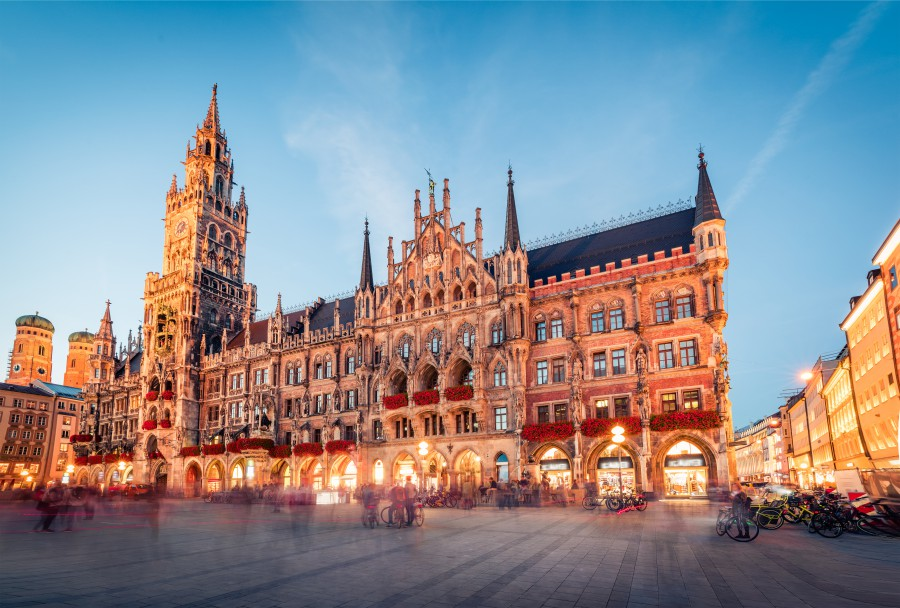
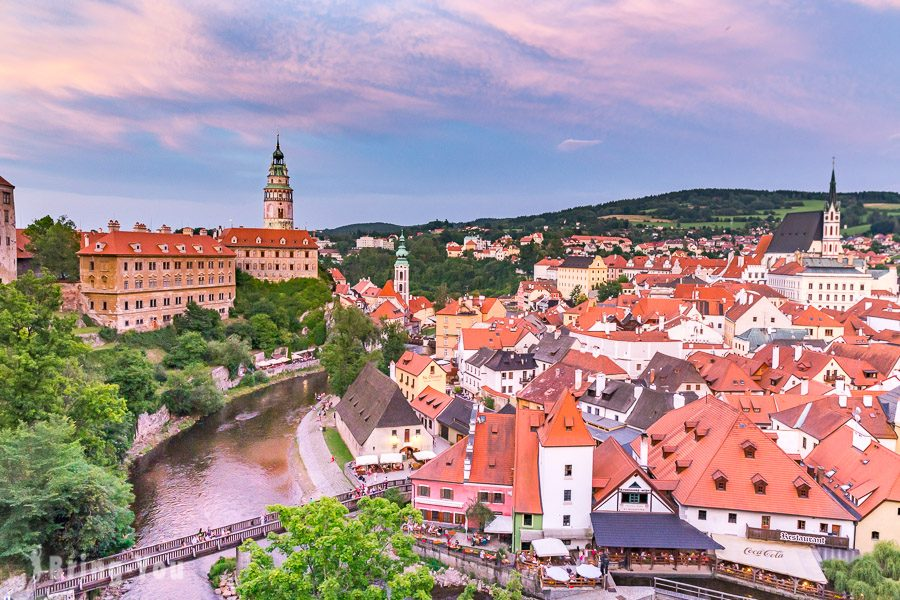

航班資訊
去程 (2/11)
約 17h
07:50 TPE
CI 169
TPE T1
ICN
T2
仁川 (ICN) 轉機 2h 10m
13:30 ICN
LH 719
ICN T1
MUC
T2
仁川轉機攻略
- 轉機： 仁川機場轉機指南
- 安檢：轉機需再次通過安檢，水需倒掉。
- 設施：T2 設有免費淋浴間、Nap Zone (躺椅休息區)。
- 體驗：韓國文化體驗館可免費做手工藝。
慕尼黑機場 (MUC) 入境
- 特色：世界唯一設有釀酒廠的機場 (Airbräu)。
- 交通：出關後跟著綠色 S (S-Bahn) 指標。
- 路線：搭乘 S1 或 S8 線皆可抵達中央車站 (Hauptbahnhof)，約 40 分鐘。
回程 (2/27)
約 16h
23:25 VIE
OS 007
VIE T3
BKK
曼谷 (BKK) 轉機 2h 20m
17:50 BKK
CI 836
BKK
TPE T1
維也納機場 (VIE) 離境
- 交通：從中央車站搭 RJ (Railjet) 直達機場最快 (15分鐘)。
- 購物：必買 Manner 威化餅、莫札特巧克力、施華洛世奇。
- 退稅：請預留 3 小時，海關蓋章隊伍通常很長。
曼谷轉機攻略
- 美食：轉機區有 Mango Sticky Rice (芒果糯米)。
- 放鬆：若時間充裕，可體驗泰式肩頸按摩。
城市導覽
點擊城市卡片查看詳細攻略

慕尼黑
薩爾斯堡
哈修塔特

CK小鎮
布拉格
布達佩斯

維也納
行前檢查表
資訊中心
富邦產險資訊
保單號碼
0500-1234ABCD (範例)
海外緊急救援
+886-2-2345-9292
理賠提醒：
若遇班機延誤或行李遺失，請務必索取「航空公司證明」。若遇生病就醫，請保留「診斷證明」與「收據正本」。
若遇班機延誤或行李遺失，請務必索取「航空公司證明」。若遇生病就醫，請保留「診斷證明」與「收據正本」。
台灣駐外辦事處
🇩🇪駐慕尼黑辦事處 (德國)
急難救助：+49-175-570-8059
🇦🇹駐奧地利代表處 (維也納)
急難救助：+43-664-345-0455
🇨🇿駐捷克代表處 (布拉格)
急難救助：+420-603-166-707
🇭🇺駐匈牙利代表處 (布達佩斯)
急難救助：+36-30-964-1601
歐盟通用急難電話：112